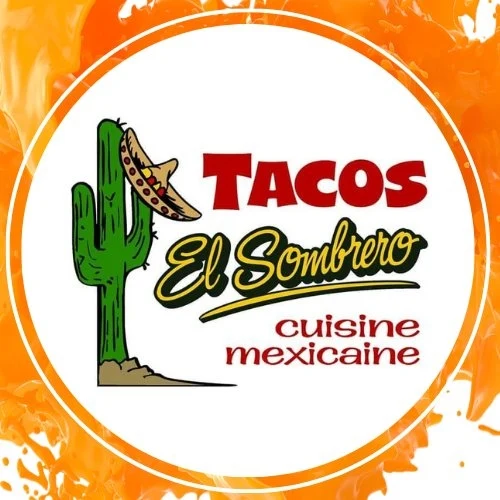
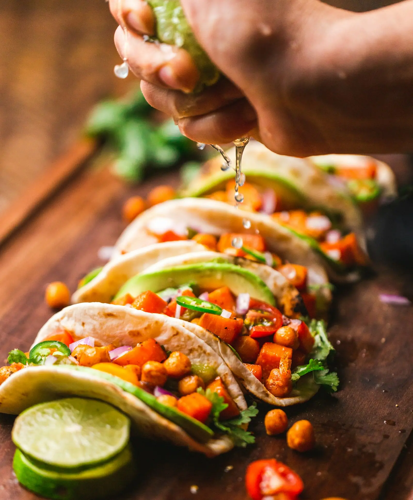
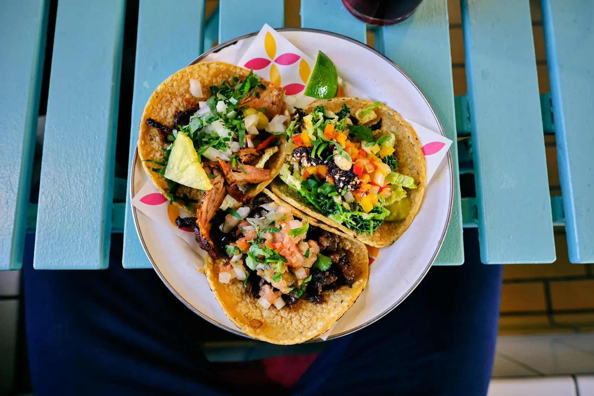

RéserverÀ Sainte-Thècle depuis 2013. Recettes de famille, du jeudi au samedi soir.
Réserver · 418-289-1260

En 2013, une famille mexicaine ouvre ses portes à Sainte-Thècle pour partager sa cuisine. En 2025, Hugo Jaramillo reprend le flambeau, avec les recettes de sa mère et de sa grand-mère.
4,4 / 5 · 316 avis Google · voir sur Google Maps
« Nous avons découvert ce restaurant en avril 2025 quand nous étions dans la région.
Nous avons tellement aimé la nourriture et l’ambiance que nous avons décidé de faire un mini road-trip de Québec aller-retour pour retourner manger à ce restaurant. Nous avons mangé à plusieurs restaurants Mexicains (Québec, Montréal, etc.) et je dois avouer que c’est le meilleurs restaurant Mexicains que nous connaissons (qui aurait cru que nous l’aurions trouvé à Sainte-Thècle)!
Après 2 visites, nous avons goûtez plusieurs plats et ils sont tous délicieux! (Nacho (WOW), Guacamole, Chimichanga, Tacos Al Pastor, Volcan et Enchiladas de Molé) tout est excellent, j’ai déjà hâte d’y retourner pour goûter les fajitas!
Je conseiller à 100%, vous allez adorer votre expérience! »
« Beau décor,bon service et bouffe excellente!!à découvrir absolument! »
« Cuisine santé fraîche familial traditionnel : ça vaut le détour! Une visite au Mexique sans prendre l'avion! »
| Jeudi | 17 h – 23 h 30 |
| Vendredi | 17 h – 23 h 30 |
| Samedi | 17 h – 23 h 30 |
| Dimanche – mercredi | Fermé |
Heures publiées en ligne — à confirmer.*
400, rue Saint-Jacques
Sainte-Thècle (QC)
418-289-1260
hugo.jrm@hotmail.com